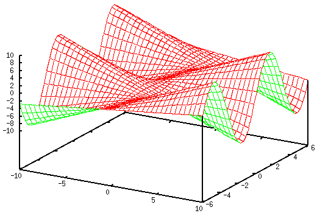
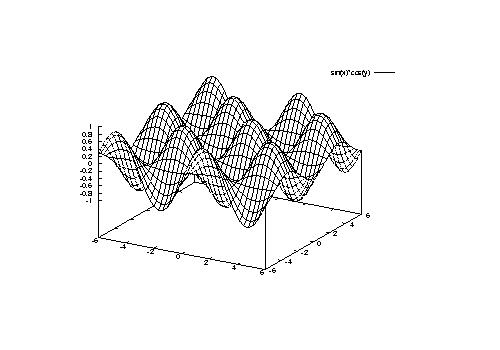

<!DOCTYPE HTML PUBLIC "-//W3C//DTD HTML 4.01 Transitional//EN">
<html lang="ja">
<head>
<title> gnuplot / image </title>
<!-- Generated 1999/ 7/21 -->
<!-- $Id: image.html,v 1.11 2004/12/17 07:33:39 kawano Exp $ -->
<meta http-equiv="content-type" content="text/html;charset=iso-2022-jp">
<link rel="stylesheet" href="style-new.css" type="text/css">
</head>
<body>

<table width="100%" border="0" cellpadding="0" cellspacing="0">
<tr><td bgcolor="#cccc90" width="320">
    <div align="left">
    <a href="index.html">
    
    </a></div></td>
    <td bgcolor="#cccc90">
      <div align="center"><h3> - not so Frequently Asked Questions - </h3> </div>
      <div class="update"> update 2004/9/16 </div>
    </td>
</tr>
<tr><td bgcolor="#fae8ba"></td>
    <td bgcolor="#fae8ba"><div class="navi"> 
<a href="index.html">           HOME </a> |
<a href="intro/index.html">     INTRODUCTION </a> |
<a href="general.html">         INFORMATION </a> |
<a href="gallery/index.html">   GALLERY </a> |
<a href="image-e.html">         ENGLISH </a>
</div></td></tr>
</table>
<hr class="topsep">


<table width="100%" border="0" cellpadding="0" cellspacing="0">
<tr><td id="menu">
 <p> not so FAQ</p>
  <ul>
    <li><a href="legend.html">      $BK^Nc(B(Legend) </a>
    <li><a href="tics.html">        $BL\@9(B(Tics) </a>
    <li><a href="label.html">       $B%i%Y%k(B(Label) </a>
    <li><a href="plot1.html">       2$B<!85%W%m%C%H(B </a>
    <li><a href="plot3d.html">      3$B<!85%W%m%C%H(B </a>
    <li><a href="polar.html">       $B6K:BI8%W%m%C%H(B </a>
    <li><a href="parametric.html">  $BG^2pJQ?tI=<((B </a>
    <li><a href="datafile.html">    $B%G!<%?%U%!%$%k$N?tCM(B </a>
    <li><a href="postproc.html">    $B?^$rIA$$$?$=$N8e$O(B</a>
    <ul>
      <li><a href="postproc.html#8.1">
           TeX$B$NJ8=q(B </a>
      <li><a href="postproc.html#8.2">
           $BJ#?t$N?^$r$^$H$a$k(B </a>
      <li><a href="image.html#8.3">
           $B%$%a!<%8$KJQ49(B </a>
      <li><a href="postscript.html#8.4">
           $B%0%i%U$N?'(B </a>
      <li><a href="postscript.html#8.5">
           $B1&$NM>Gr(B </a>
    </ul>
    <li><a href="misc1.html">       $B$=$NB>(B </a>
  </ul>
 <br>
</td>


<td id="content">


<h1><a name="top"> $B?^$rIA$$$?$=$N8e$O!%!%!%(B($B$=$N(B2) </a></h1>

<div align="center">
<a href="postproc.html">   1 </a> | 
<a href="image.html">      2 </a> | 
<a href="postscript.html"> 3 </a>
</div>


<h2><a name="8.3">$B%0%i%U$r(BPNG$BEy$N%$%a!<%8$KJQ49$7$?$$!%(B</a></h2>


<p> gnuplot$B$,D>@\@8@.$9$k$3$H$,$G$-$k%$%a!<%8$N%U%)!<%^%C%H$O!$(Bppm$B$H(B
png $B$G$9!%$^$?!$(Bgnuplot3.7$B$+$i$OD>@\(BGIF$B$r=PNO$9$k$3$H$,2DG=$K$J$j$^$7(B
$B$?!%$7$+$7(Bgnuplot$B$,:n$k(BGIF$B$O!$(BLZW$B$NFC5v$N4X78$+!$05=L$5$l$F$$$J$$$h$&(B
$B$G$9!%$^$?!$(Bgnuplot3.8$B$+$i$O(BGIF$B$O%5%]!<%H$5$l$F$$$^$;$s!%(BGIF$B$G=PNO$9$k(B
$BL\E*$NB?$/$O!$7k2L$r(BWeb $B$K:\$;$k$3$H$G$O$J$$$G$7$g$&$+!%$=$l$J$i!$(BGIF
$B$r;H$&$N$r;_$a$F(BPNG(Portable Network Graphics)$B7A<0$G=PNO$9$k$3$H$r?d>)(B
$B$7$^$9!%:G6a$N(BWeb$B%V%i%&%6$O(BPNG$B$r%5%]!<%H$7$F$$$^$9$7!$%U%!%$%k$N05=LN((B
$B$bBg$-$$$N$G%M%C%H%o!<%/$X$NIiC4$b>.$5$/$J$j$^$9!%(B</p>

<p> $BG$0U$N%U%)!<%^%C%H$KJQ49$9$kJ}K!$OBt;3$"$j$^$9$,!$(B
$B<g$@$C$?$b$N$r5s$2$k$H!%!%!%(B</p>
<ul>
  <li> X11$B$N2hLL$KI=<($7$?$b$N$r(Bxwd$B$G%U%!%$%k$K%@%s%W$7!$$=$l$r(B
       xv$B$d(BImageMagick, Gimp$B$GJQ49$9$k!%(B
  <li> ppm$B$G=PNO$7$F$*$-!$(BImageMagick$B$d(Bxv$B!$(Bpbmplus, netpbm$B$GJQ49$9$k!%(B
  <li> PostScript$B$G=PNO$7!$(BGhostScript$B$GJQ49$9$k(B(gs$B$,%5%]!<%H$7$F$$$k(B
       $B%U%)!<%^%C%H$N$_(B)$B!%(B
  <li> PostScript$B$G=PNO$7!$$=$l$r(BGhostScript$B$G2hLLI=<($7$?$b$N$r(Bxwd$B$G(B
       $B%U%!%$%k$K%@%s%W$7!$$=$l$r(Bxv$B$d(BImageMagick$B$GJQ49$9$k!%(B
</ul>
<p>$BEy$,$"$j$^$9!%<+F0E*$KJQ49$9$k$J$i(Bppm$B$G:n$C$F$*$$$F(BppmtoXXX$B$GJQ49$9$k$N$,(B
$BJXMx$G$7$g$&!%4JC1$J$N$O!$(BX$B$N2hLL$r(Bxwd$B$G%@%s%W$9$kJ}K!$G$7$g$&!%(B</p>

<p> $B$^$:(Bgnuplot$B$G2?$+$r2hLL$KI=<($7$^$9!%JL$N%?!<%_%J%k$r;H$&$+!$(B
gnuplot$B$N(Bshell$B%3%^%s%I$G(Bshell$B$r5/F0$7!$(Bxwd$B$G?^$rI=<($7$F$$$k%&%#%s%I%&(B
$B$r%@%s%W$7$^$9!%(B</p>

<pre class="sample">
gnuplot&gt; set yrange [-6:6] 
gnuplot&gt; set hidden3d
gnuplot&gt; set isosample 40
gnuplot&gt; splot x*sin(y)
gnuplot&gt; shell
 % xwd &gt; screen.xwd
 % exit
exit

gnuplot&gt; 
</pre>

<p>$B$3$N(Bscreen.xwd$B$r(Bxv$B$d(Bgimp, Imagemagick$B$N(Bdisplay$B%3%^%s%I$GFI$_9~$_!$B>(B
$B$N2hA|%U%)!<%^%C%H$GJ]B8$7$^$9!%$"$k$$$O(Bnetpbm$B$r;H$C$F(B</p>
<pre class="sample">
 % xwdtopnm &lt; screen.xwd | ppmtopng &gt; screen.png
</pre>
<p>$B$G$bJQ49$G$-$^$9!%<!$N?^$O!$%@%s%W$7$?2hLL$r(BPNG$B$KJQ49$7$?$b$N$G$9!%(B</p>

<div align="center"></div>


<p> GhostScript$B$GJQ49$9$k$K$O!$;H$C$F$$$k(Bgs$B$,$I$N%$%a!<%8%U%)!<%^%C%H$r(B
$B%5%]!<%H$7$F$$$k$+$rD4$Y$kI,MW$,$"$j$^$9!%$3$l$K$O!$(B
-help$B$N%*%W%7%g%sIU$-$G(Bgs$B$r5/F0$7$^$9!%(B</p>

<pre class="sample">
 % gs -help
 GNU Ghostscript 5.10 (1998-12-17)
 Copyright (C) 1997 Aladdin Enterprises, Menlo Park, CA.  All rights reserved.
 Usage: gs [switches] [file1.ps file2.ps ...]
 Most frequently used switches: (you can use # in place of =)
  -dNOPAUSE           no pause after page   | -q       `quiet', fewer messages
  -g&lt;width&gt;x&lt;height&gt;  page size in pixels   | -r&lt;res&gt;  pixels/inch resolution
  -sDEVICE=&lt;devname&gt;  select device         | -dBATCH  exit after last file
  -sOutputFile=&lt;file&gt; select output file: - for stdout, |command for pipe,
                                          embed %d or %ld for page #
 Input formats: PostScript PostScriptLevel1 PostScriptLevel2 PDF
 Available devices:
    x11 x11alpha x11cmyk x11gray2 x11mono ml600 npdl epag escpage lbp310
    lbp320 lips2p lips3 lips4 lips4c lips4v lips4vc fmpr mjc180 mjc360 mjc720
    mj500c pr150 jj100 bj10v bj10vh md5000 dmprt deskjet djet500 laserjet
 .....
</pre>

<p>$B$3$3$G$O!$(Bgs$B$r;H$C$F(Bjpeg$B$KJQ49$9$kJ}K!$r@bL@$7$^$9!%$^$:(Bgnuplot$B$G(B
EPS$B$N?^$r:n$C$F$*$-$^$9!%$3$N(BEPS$B%U%!%$%k$r(Bgs$B$GJQ49$7$^$9!%(B</p>

<pre class="sample">
 % gs -dNOPAUSE -sDEVICE=jpeg -sOutputFile=test.jpg -q 
   -dBATCH -g500x350 test.eps
</pre>

<p> $B>e$NNc$G$O9T$r@^$jJV$7$F$$$^$9$,!$<B:]$O0l$D$N9T$G$9!%(B
     <tt>-sOutputFile</tt> $B$G=PNO%U%!%$%kL>$r;XDj$7$^$9!%(B
     <tt>-sOutputFile=-</tt> $B$H$9$k$HI8=`=PNO$K$J$j$^$9!%(B<tt>-g</tt>$B$G%$(B
     $B%a!<%8%U%!%$%k$N%T%/%;%k?t$r$7$F$$$^$9$,!$$3$3$N?tCM$O(Bgnuplot$B$N(BEPS
     $B$G=q$-=P$7$?$H$-$K!$?^$,BgBN<}$^$kBg$-$5$rE,Ev$KM?$($F$$$k$b$N$G$9!%(B
     $B?^$K$h$C$F$O$O$_=P$7$?$jM>Gr$,Bg$-$/$J$j$9$.$?$j$9$k$+$b$7$l$^$;$s!%(B
     </p>

<p> $B$3$3$G$O(Bjpeg$B$KJQ49$7$F$_$^$7$?$,!$?^$N%W%m%C%H$NMM$K%3%s%H%i%9%H$,6/(B
     $B$/6-3&@~$,$O$C$-$j$7$?%$%a!<%8$KBP$7$F$O!$(Bjpeg$B$O8~$$$F$$$^$;$s!%%$(B
     $B%a!<%8%G!<%?$K$9$k$J$i!$$d$O$j(BGIF$B$d(BPNG$B$,L5Fq$G$9!%(B</p>

<div align="center"><table border="0">
<tr><td align="center"></td></tr>
<tr><td align="center"> gnuplot$B$G:n$C$?(BEPS$B$r(Bgv$B$GI=<((B </td></tr>
<tr><td align="center"></td></tr>
<tr><td align="center"> gs$B$r;H$C$F(Bjpeg$B$KJQ49(B </td></tr>
</table></div>

<div class="top"><a href="image.html#top"></a></div>
</td></tr></table>
<hr class="topsep">

</body>
</html>

